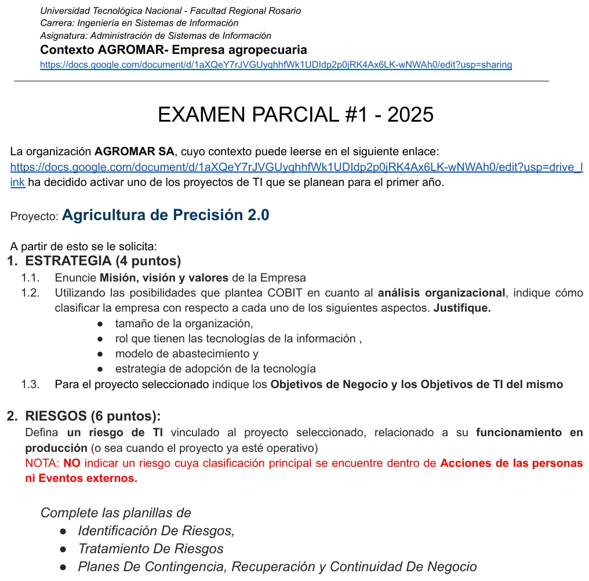

1° parcial, 31/05/2025
1° parcial, 31/05/2025
Enunciado


Propuesta de respuesta
Respuesta no verificada. La propuso Luta Studios con inteligencia artificial y ningún docente la revisó. Puede tener errores.
1. Estrategia
1.1. Misión, visión y valores
| Propuesta | |
|---|---|
| Misión | Producir alimentos agropecuarios de calidad de forma eficiente y sustentable, cuidando el suelo, a las personas y a la comunidad donde trabajamos |
| Visión | Ser una de las empresas agropecuarias de referencia de la región por su productividad por hectárea y por usar la tecnología para producir de manera sustentable |
| Valores | Sustentabilidad, innovación, calidad, compromiso con las personas y responsabilidad con el ambiente |
1.2. Análisis organizacional (COBIT)
| Aspecto | Clasificación | Justificación |
|---|---|---|
| Tamaño | Grande | Una empresa agropecuaria S.A. con producción agrícola y láctea, ERP y áreas propias como Tecnología Agropecuaria supera los 250 empleados a tiempo completo. Si el contexto da entre 50 y 250, es pequeña o mediana |
| Rol de TI | Cambio | TI impulsa la innovación, porque la agricultura de precisión (drones, sensores, mapas de siembra) sale de ahí. Pero si los sistemas fallan, el campo sigue sembrando, cosechando y ordeñando por un tiempo, así que no hay dependencia crítica para funcionar hoy |
| Abastecimiento | Híbrido | Combina sistemas y personal propios (el ERP y el área de Tecnología Agropecuaria) con servicios externos, como el procesamiento de imágenes en la nube y los proveedores de drones y maquinaria |
| Adopción de tecnología | Seguidor | Adopta tecnología que ya está probada en el agro, como el GPS, los drones y la siembra variable. El «2.0» del proyecto muestra que mejora algo que ya usa, no que sea la primera en el mercado |
1.3. Objetivos del proyecto Agricultura de Precisión 2.0
| Objetivos de negocio | Objetivos de TI |
|---|---|
| Aumentar un 8 % el rinde por hectárea de los lotes con siembra variable en las próximas dos campañas | Integrar en una sola plataforma los datos de drones, sensores y maquinaria con el ERP en 12 meses |
| Bajar un 15 % el uso de semilla y fertilizante por hectárea en la próxima campaña | Generar el mapa de prescripción de cada lote dentro de las 48 horas del vuelo del dron |
| Reducir un 10 % el costo de producción por tonelada en dos años | Mantener una disponibilidad del 99 % de la plataforma durante la siembra y la cosecha |
2. Riesgos
Un riesgo de producción cuya clase principal no es Acciones de las personas ni Eventos externos, como pide la nota.
Planilla de Identificación de Riesgos
| Campo | Contenido |
|---|---|
| Especificación | Una actualización del software de la plataforma de Agricultura de Precisión 2.0 cambia los parámetros de calibración de los sensores y genera mapas de prescripción con dosis erróneas, lo que hace que la sembradora aplique semilla y fertilizante equivocados en los lotes y afecta el proceso crítico de siembra |
| Activos | Software de la plataforma (software). Mapas de prescripción y lecturas de los sensores (información). Sensores y controlador de la sembradora (hardware) |
| Dimensión | Integridad, los mapas dejan de ser exactos |
| Clase, subclase y elemento SEI | 2. Fallas de sistemas y tecnología, 2.2 Software, control de cambios. Secundaria, 2.2 Software, configuración |
| Factores de probabilidad | Frecuencia de amenazas con contacto periódico, porque el proveedor actualiza cada temporada. Capacidad de resistencia baja si no hay entorno de prueba ni validación de los mapas antes de cargarlos |
| Probabilidad | 3, moderado |
| Factores de impacto | Productividad, menor rinde o resiembra del lote. Costo, insumos desperdiciados. Sensibilidad, se pierde la confianza en el proyecto. Volumen, todos los lotes sembrados con esos mapas. Momento, la ventana de siembra es corta |
| Impacto | 4, mayor |
| Severidad |
Planilla de Tratamiento de Riesgos
| Campo | Contenido |
|---|---|
| Evitar | Congelar las versiones durante la ventana de siembra. Ninguna actualización se instala en plena campaña, y en ese período el riesgo desaparece |
| Transferir | Contrato con el proveedor de la plataforma (UC) con SLA y responsabilidad por las fallas de sus versiones. Baja el impacto económico |
| Mitigar | Cada actualización pasa por control de cambios, con prueba en un entorno separado (8.31 y 8.32) y validación del mapa contra un lote testigo antes de cargarlo en la sembradora. Baja la probabilidad |
| Controles | Preventivos, la aprobación del CAB, las pruebas (8.29) y la gestión de la configuración de los parámetros (8.09). Detectivo, la comparación automática de la dosis del mapa contra la dosis histórica del lote y el log de la sembradora (8.15). Correctivo, el rollback a la versión anterior |
| Riesgo residual | Misma especificación. Probabilidad 2 e impacto 3, severidad |
Planilla de Planes de Contingencia, Recuperación y Continuidad de Negocio
| Campo | Contenido |
|---|---|
| Disparadores | Una dosis del mapa fuera del rango histórico del lote, una alarma del controlador de la sembradora, una diferencia entre la semilla cargada y la superficie sembrada, el aviso del operario |
| Contingencia | Frenar la siembra variable en el lote, registrar el incidente y pasar a dosis fija estándar por lote |
| Continuidad | Seguir sembrando con dosis fija o con el último mapa validado mientras se corrige, para no perder la ventana de siembra |
| Recuperación | Volver a la versión anterior del software, recalibrar los sensores, regenerar y validar los mapas, registrar en qué lotes se aplicó mal para corregir con una fertilización posterior y cerrar con un PIR. RTO de un día, porque la ventana de siembra es corta |
Respuesta no verificada. Puede tener errores.
Se armó con 1° parcial, misión, visión y valores, factores de diseño de COBIT, objetivos y gestión de riesgos, con las columnas de las planillas de Identificación, Tratamiento y Planes que describe el resumen.
Quedó en duda: El contexto de Agromar está en un documento enlazado que no está en la materia. La misión, la visión, los valores, el tamaño y el modelo de abastecimiento son supuestos de una empresa agropecuaria con ERP, producción láctea y un área de Tecnología Agropecuaria, como la describen otros exámenes del mismo año. El rol de TI quedó en Cambio. Si el contexto muestra que la operación diaria ya depende del ERP o de la plataforma, sería Estratégico. Las planillas de la cátedra no están en la materia y se armaron con sus columnas tal como las describe el resumen. Las cifras de los objetivos son de ejemplo.
¿Cómo te fue?
Marcá cada tema del examen.
- EstrategiaArquetipos de estrategia, en 1° parcial
- COBITCOBIT 2019, en 1° parcial
- RiesgosRiesgos, en Final